Brood X cicada burrows - the red ant in the upper left is on the edge of one, and there is another burrow in the lower right of the photo. Any day now!
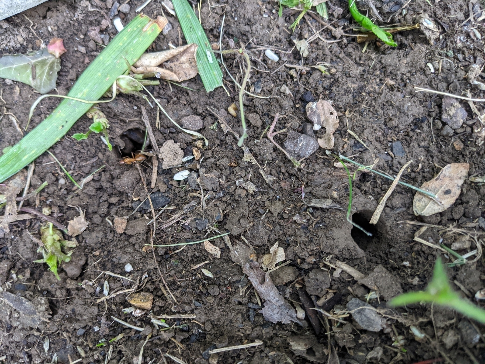
The world’s worst mockingbird has moved into our yard. Chases off all the smaller songbirds; doesn’t sing, himself.
Today at Zoom coffee hour, we evaluated the merits of dandelion wine, persimmon wine, and blackberry wine. Group consensus: blackberry wine is the winner by far.

Recent dinner conversation: the cook said, “I put a surprise ingredient in this!” One of the eaters said, “It’s raisins. The surprise is always raisins.” It was raisins.
"Awareness, Acceptance, Exploration..." in a cell phone picture
Just took a marvelous online workshop from Goodhart Photography called ‘Photography for Wellbeing.” I learned a mindfulness practice for taking photos.
This is a home-made wind bell we got at a farmstand near our favorite beach. It shattered in a windstorm years ago, but I couldn’t bear to get rid of it. (And yes, it still rings nicely.)
I feel like it just said “thanks.”
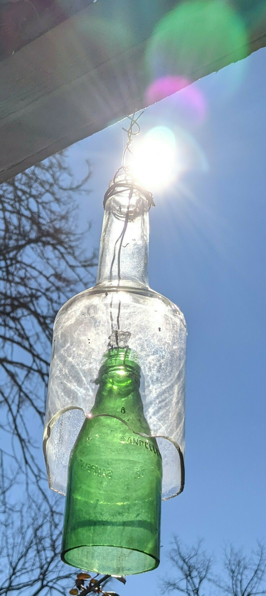
Hey you, I mean, y'all, I mean yinz, youse guys
Today at Zoom Coffee Hour, we mulled over the variety of terms for the second person plural pronoun. One person, from Pennsylvania, grew up saying “yinz.” Most people around here say “y’all.” In one place I lived, it was “you guys.” My high school French teacher in Texas used to yell, “People! ‘Vous’ is ‘y’all!‘”
"You like cats," she said.
A statement, not a question: we were both wearing face masks with cat pictures, in the check-out line. I nodded.
“I got eleven of them, twelve if you count the one buried in the yard.” Seeing my interest, she added, “And I got two possums, three raccoons, and a couple of rats.”
She told me that one of the raccoons comes up to the sliding door because she feeds it hot dogs.
I said, “If I were a raccoon, I would show up for hot dogs.”
We nodded together about hot dogs. And then I had to pay, and go.
That's a good question...
KELLY: Which - I suppose, as a non-scientist, I have to ask, why? What would be the great loss to humanity if the pupfish of Devils Hole were no more?
KOLBERT: Well, I quote a biologist named Phil Pister, who was instrumental in saving the Devils Hole pupfish and other very, very endangered fish. And people would always ask him, you know, when he was devoting his life to this task, “What good are pupfish?” And his response, which I think bears repeating, was always, “What good are you?”
Machine February photoblogging
This machine reminds me of this other machine.
energy February photoblogging
The Tablecloth Monster returns. And yes: she pulls it all down. Oh, yes.
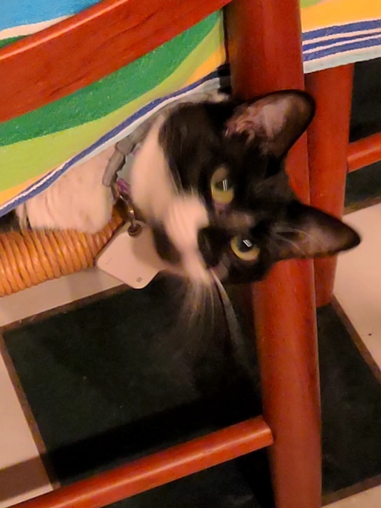
The Office Cats are in. They love these cat ball beds. Especially because I put them next to the radiator.
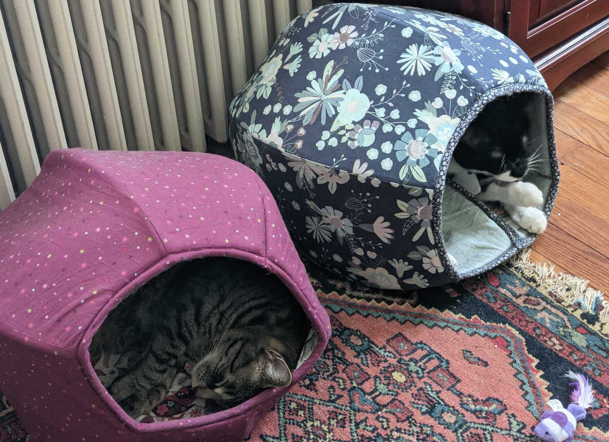
Lately, my cats have been adding drama to their routines. When one leaves the litter box, the other waits in ambush.
Morning Beverage February Photoblogging
Coffee + journaling, first thing every morning. …Okay, after I feed the cats.
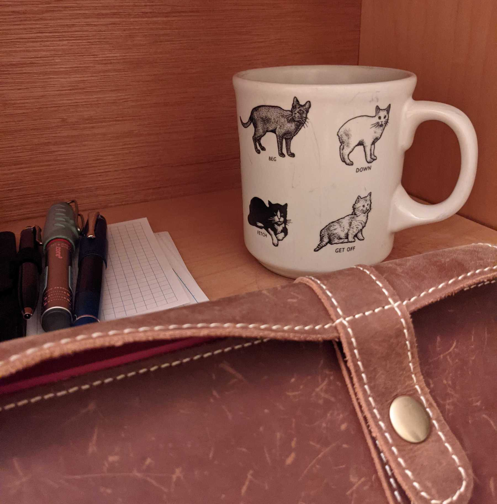
One of our children is now paying his own cell phone bill. Maybe we’ll buy a beach house with the savings 🤣
Yay! Getting up to pet the cats or make some tea counts as exercise.
Today at Zoom coffee hour, a lively discussion over whether planting seeds – or fence posts – based on the moon’s astrological signs, as listed in the Old Farmer’s Almanac, actually works.
“I arise in the morning torn between a desire to improve (or save) the world and a desire to enjoy (or savor) the world. This makes it hard to plan the day.”
― E. B. White
Great start to inauguration day here in the U.S.: watching some picturesque snow flurries while holding a purring cat.
My mental DJ this morning has been playing “What Shall We Do with a Drunken Sailor,” which is a song my grandmother taught me. Only now has it occurred to me that this is a weird song to teach little children to sing…
The apple processing plant in town is making apple butter today – the air outside smells like cinnamon.
Wanted to cook something with fennel bulb, but the supermarket was out… which is unusual. A friend who stocks produce said that’s because it is early January: fresh veggies will be flying off the shelves for the next few weeks, as people resolve to eat healthier.
Today at Zoom coffee hour, a local historian mentioned that people often hid things in grandfather clocks and mantel clocks. One time, she found a bone fragment: a souvenir from someone’s leg surgery.
New Year’s Day began with a moment of peace, before the black and white one realized she was being snuggled, and left in a huff.
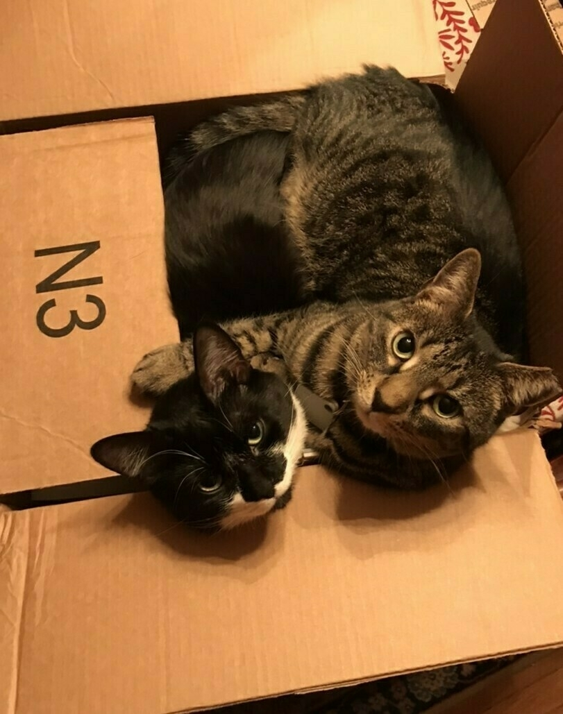
Started fiddling with interstitial journaling a few weeks ago. It’s surprisingly helpful. It’s like a combination emotion/distraction management tool, and a “now, where was I?” log. I’m using the Amplenote Daily Jots feature for mine. Ness Labs open-access description with Roam tips here, or scale the Wall of Medium to see Tony Stubblebine’s original article here.
This is the week to clean out the old year’s files and spreadsheets, and set up the new ones. I’m excited by the idea of organizing. I’m excited by my plans for organizing. I love thinking and planning. Actually digging into the files, however, seems suspiciously like work.
Our common image of experience is about as accurate as a still photograph of a man riding a bicycle. Project this image back into reality, and the man will fall off his bicycle. – Robert Grudin
Year in Review, March 2020: the Catio
For the first time, I’m doing a yearly review using this template from Ness Labs. However, I’d like to do a photographic year in review, right here. Let’s start with Posey, who is on our screened-in porch, now known as the “catio.” This is early spring, 2020, ten days before our state issued a stay-at-home order for the pandemic.
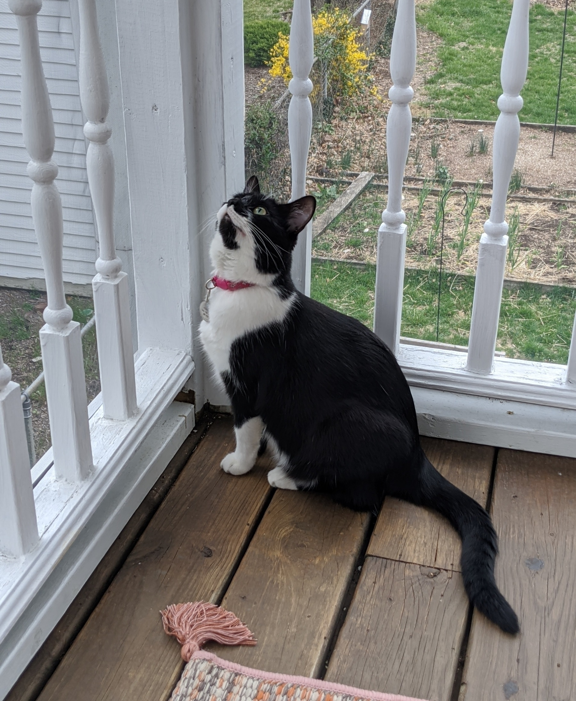
Year in Review, April 2020: We Succeed in Doubling Household Cat Census, but Fail Miserably at Sourdough
One month later, we adopted Beans, the nervous fellow in the box below. And yes, besides adopting a pet, I tried another pandemic cliche: baking sourdough. (My dough did not rise. It sank. I learned to make sauerkraut and pickles instead.) Beans hid under a bed for two weeks.
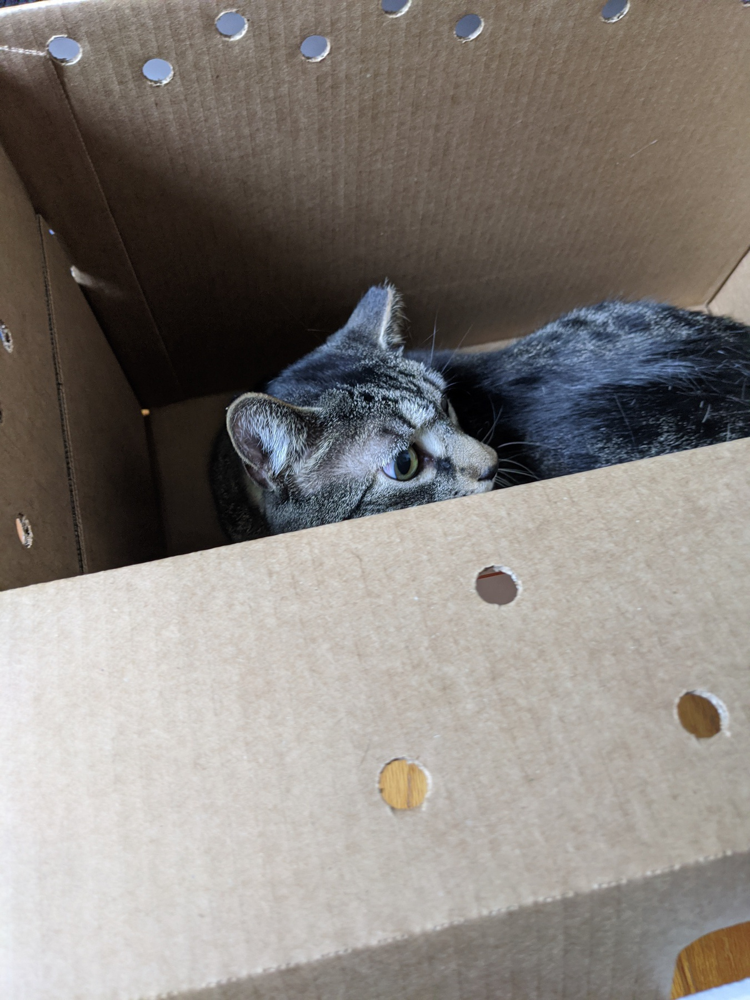
Year in Review, April 2020: Birds and Bluebells
Our daughter moved back home with us to attend grad school. On this day we walked at a retreat center on the Shenandoah River. Virginia bluebells in the foreground; in the background, I like to think those waterbirds with the brown heads are canvasback ducks, since it was migration season. Love this bird ID app.
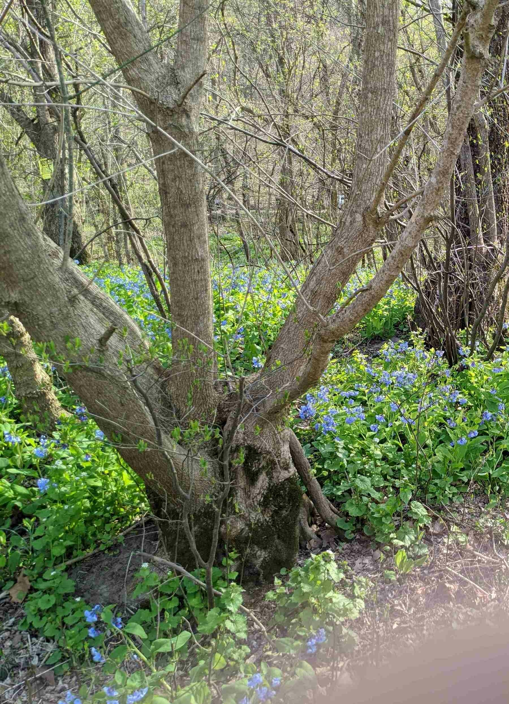
Year in Review, May 2020: Had to Cancel Spring Vacation, Garden Tries to Compensate
The hydrangeas decided to be all the colors this year.
Year in Review, June 2020: Mass Mantis Transportation
So when we screened in the catio last summer, we neglected to notice the praying mantis egg case inside the porch. Luckily, our daughter used to work at an entomology lab. Here is my heroic family moving 300 or so mantids to the garden. We kept finding mantises for the rest of the summer; and they too got ferried to the yard.
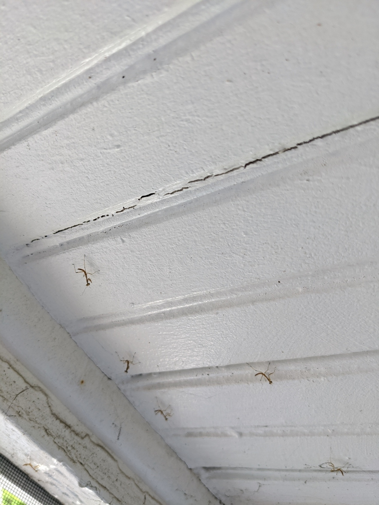
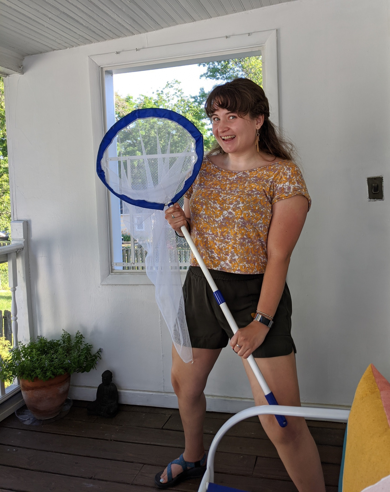
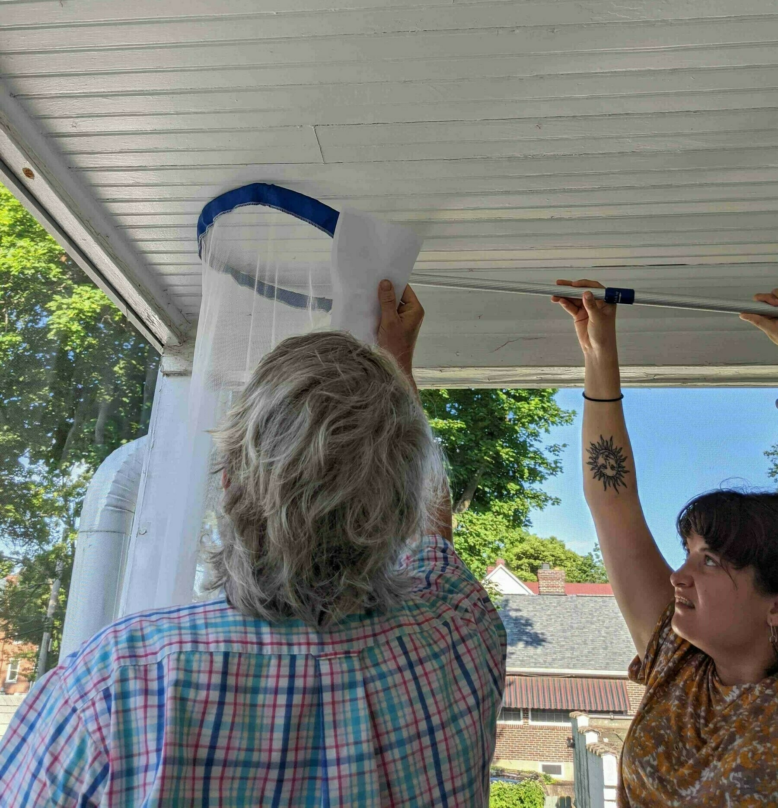
Year in Review, August 2020: At the Beach, Even the Clouds Made Waves
Vacation in late August, to a quiet beach cottage. This was one of the strangest cloud formations I’ve ever seen. Maybe it was this phenomenon.
Year in Review, October 2020: Had to Cancel Family Visits, But at Least the Trees Were Beautiful
Gingko grove at arboretum; trees in front of our house. We had a three-hour Zoomsgiving.
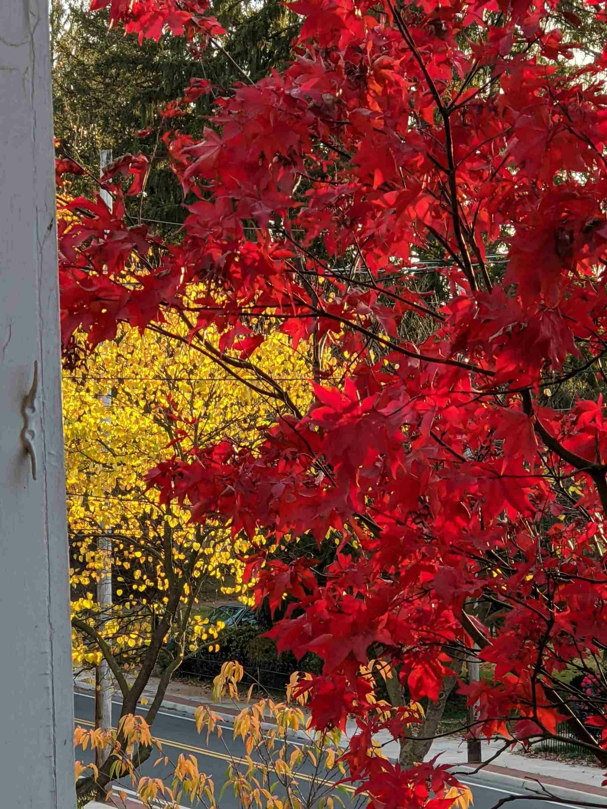
Year in Review, November 2020: Beans Tries All the Beds
Beans eventually came out from under the humans’ bed and tried to share a cat bed with Posey. She kicked him out, and he had to go to his own.
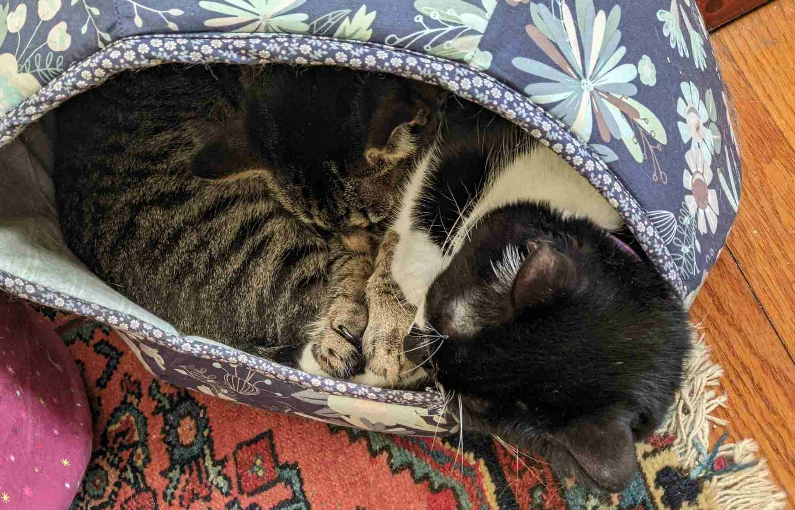
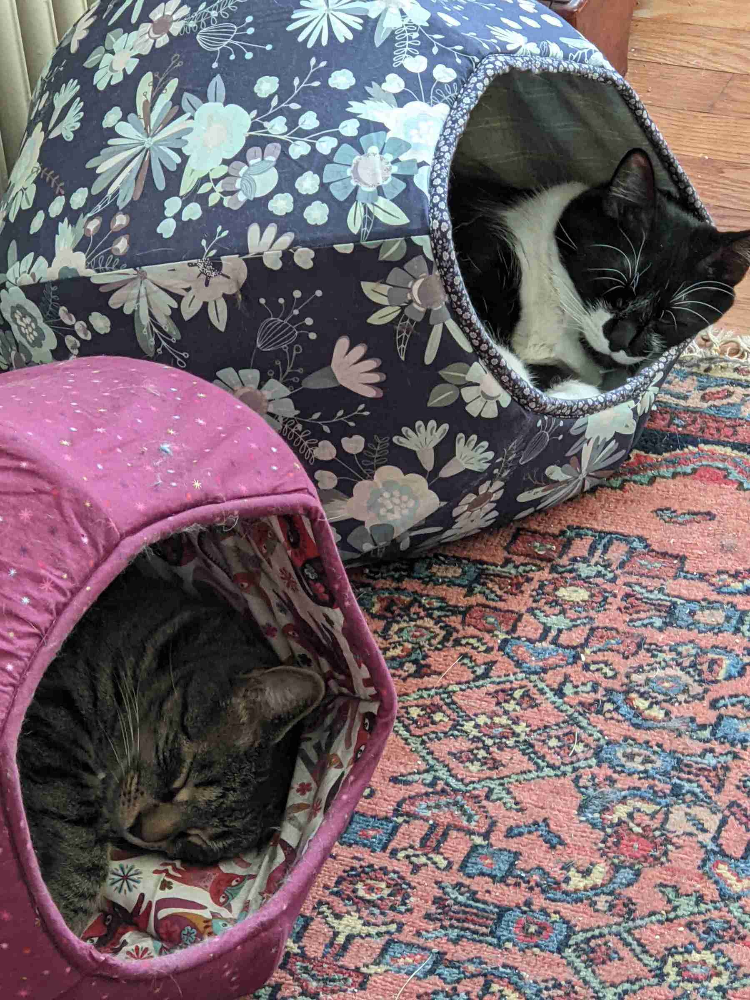
Year in Review, December 2020: Dear Family, Please Don't Blame the Post Office...
…when you open your Christmas boxes. In the red tote, we have Posey hunkering down to thoroughly crush the ribbons and bows. In the foreground, we have Beans activating claw mode to slice some paper. This is why we (still) can’t have nice things.
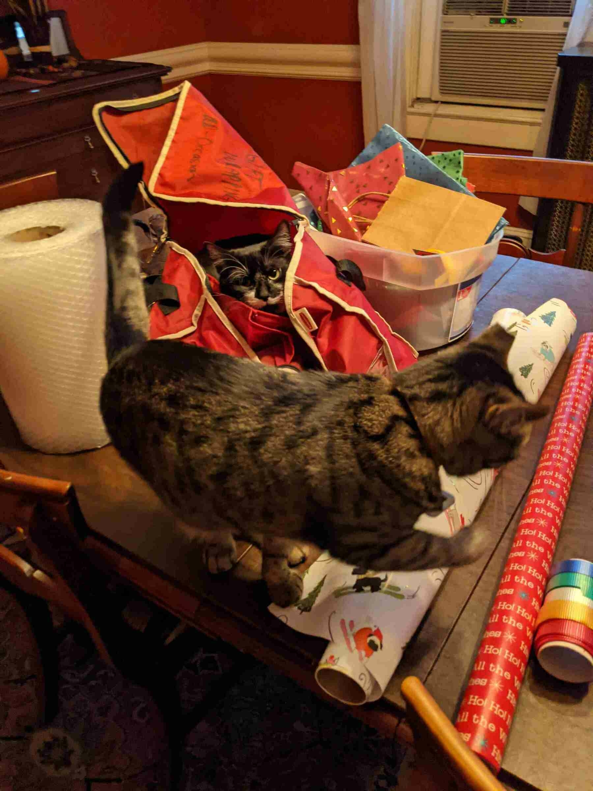